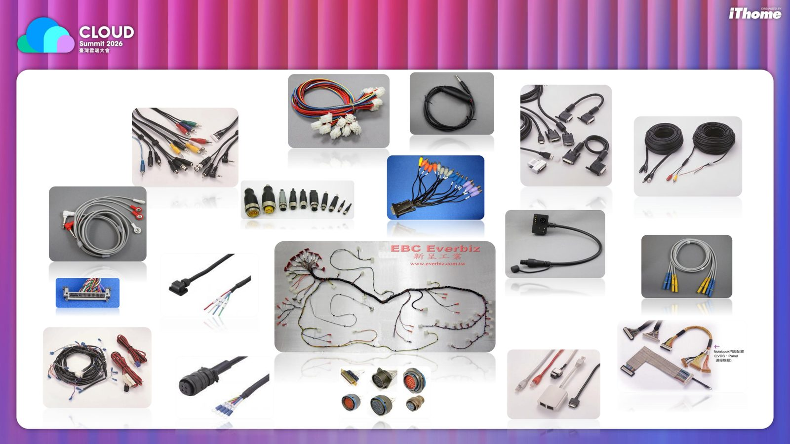
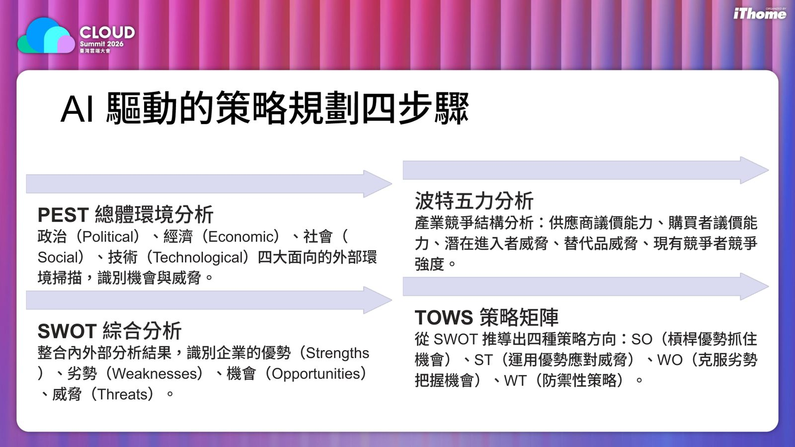
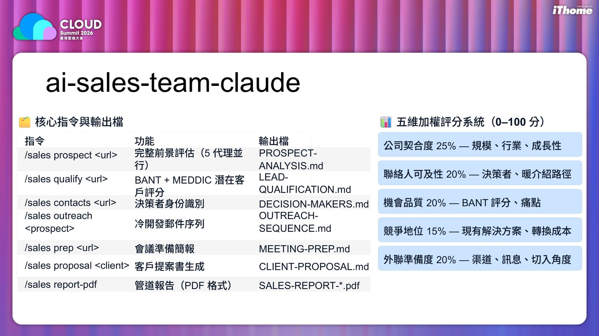
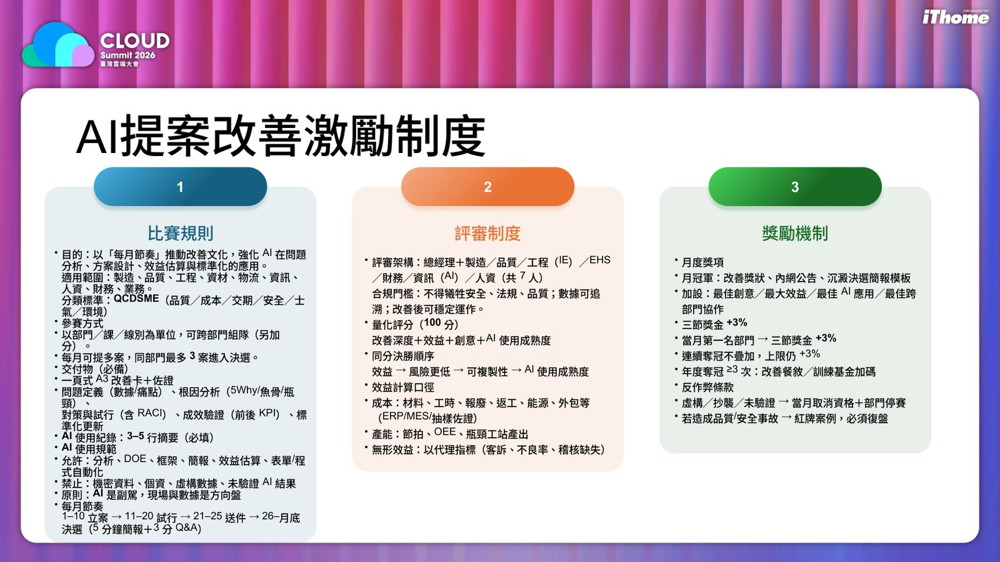

摘要
本演講直擊企業在 AI 轉型中「個人懂得使用工具，組織卻無法協同決策」與「關鍵隱性知識隨老員工離職而流失」的核心挑戰。講者陳泳睿提出 AI 應用的三層次框架：從個人增強的「點」，到流程整合的「線」，再到將 AI Agent 作為智能決策中樞的「面」。技術上，展示了「老師傅 Prompt」知識萃取系統（包含教練式訪談、結構化整理、品質評估及多元輸出），以及基於 Claude 構建的 `ai-sales-team-claude` 業務代理，利用五維加權評分系統（公司契合度、聯絡人可及性等）進行商機評估。最後，針對轉型失敗的通病，提出「管理制度流程提示詞化」及月度「AI提案改善激勵制度」，建立可追蹤、可審核、可控管的 AI 管理機制，是企業將 AI 融入日常營運與決策現場的實戰指南。
重點整理
- AI 應用分為「點」（個人增強，如簡報製作、資訊搜尋）、「線」（流程整合，如策略規劃、知識傳承）、「面」（AI Agent 成為企業智能中樞，跨部門協作、即時決策）三個層次
- 提出 AI 驅動的策略規劃四步驟：PEST 總體環境分析、波特五力分析、SWOT 綜合分析、TOWS 策略矩陣
- 「老師傅 Prompt」知識萃取系統透過教練式訪談、結構化整理、品質評估、多元輸出四步驟，將隱性知識轉化為可傳承的企業資產
- 企業 AI 轉型最常見的五個失敗原因：只買工具沒改流程、只做 Prompt 沒變制度、只看功能沒看場景、只求自動化沒有責任邊界、只講願景沒有驗證路徑
- 站在董事長與總經理視角，AI Agent 最重要的不是聰明而是可管理：可追蹤、可審核、可控管、可衡量、可改善
重點圖片／架構圖




AI 應用的三個層次：點、線、面
演講核心架構將 AI 應用分為三個層次：「點」是個人增強，指單一任務、個人生產力提升，如製作簡報、搜尋資料、生成內容，是目前最普及的應用方式；「線」是流程整合，串聯多個任務形成完整工作流程，如企業策略規劃、問題分析、知識傳承；「面」則是組織大腦，AI Agent 成為企業智能中樞，實現跨部門協作、即時決策與自適應管理。演講指出多數人對 AI 的認知仍停留在簡報製作、資訊搜尋、圖像生成、影片製作、程式開發等「點」的應用，但這類應用各自為政、形成知識孤島，僅能提升個人效率而未能驅動組織變革，企業真正需要的是讓 AI 成為連接各個點的「線」，甚至是覆蓋整個組織的「面」。
生成式 AI 助企業賺取「管理財」
演講提出生成式 AI 可在流程效率、人資管理、品質控管、財務管理、策略戰術、研發創新、制度建立、系統思考、接班傳承等九大管理面向為企業創造價值。在策略規劃方面，提出 AI 驅動的四步驟：PEST 總體環境分析（政治、經濟、社會、技術四大面向的外部環境掃描）、波特五力分析（供應商議價能力、購買者議價能力、潛在進入者威脅、替代品威脅、現有競爭者競爭強度）、SWOT 綜合分析（整合優勢、劣勢、機會、威脅）、以及 TOWS 策略矩陣（推導出 SO、ST、WO、WT 四種策略方向）。演講也展示了一份詳細的財務類 KPI 對照表，涵蓋長期股東價值、營收成長、市場擴張、生產力提升、成本結構、資產利用率、營收機會與顧客價值等構面的具體 KPI 公式與應用場景。
老師傅 Prompt：隱性知識傳承系統
演講指出企業最大的隱憂是隱性知識流失：資深員工退休或離職導致關鍵技術無法複製、新人培訓成本高昂、品質與效率難以維持。原因在於知識多為隱性、依賴經驗，老師傅「只可意會不可言傳」，缺乏系統性提問整理，且時間壓力下無暇記錄。針對此問題，演講提出「老師傅 Prompt」知識萃取系統，透過教練式訪談（引導式問答挖掘經驗與訣竅）、結構化整理（轉化為 SOP、檢核表、決策樹）、品質評估（確保知識完整性與可用性）、多元輸出（流程圖、知識圖譜、培訓教材、漫畫）四個步驟，讓 AI 成為最有耐心的訪談者與知識工程師。
AI Agent 與可管理性：站在董事長視角
演講定義 AI Agent 具備主動感知（持續監控企業各項指標）、自主決策、跨域整合、任務執行、持續學習等特性，並以 ai-sales-team-claude 為例，展示 /sales prospect、/sales qualify、/sales contacts、/sales outreach 等指令如何透過五維加權評分系統（公司契合度、聯絡人可及性、機會品質、競爭地位、外聯準備度）自動產出前景評估、潛在客戶評分、決策者識別等報告。演講強調站在董事長與總經理視角，AI Agent 最重要的不是聰明，而是可管理：可追蹤（做了什麼、目前卡在哪都看得見）、可審核（輸出能被覆核、決策可被還原）、可控管（權限、範圍、例外與升級機制清楚）、可衡量（是否真的縮短時間、降低錯誤）、可改善（沉澱規則、優化流程、擴大複製）。
企業 AI 轉型的常見失敗與制度化做法
演講總結企業 AI 轉型最常見的五個失敗原因：只買工具沒有改流程、只做 Prompt 沒有變制度（成功案例停留在個人身上無法複製）、只看功能沒有看場景（未從真實痛點切入）、只求自動化沒有責任邊界（缺乏審核授權紀錄追蹤）、只講願景沒有驗證路徑（沒有試點、KPI、分階段驗證）。講者也分享真正最難的其實是人的態度與習慣改變，而非技術門檻，因此提出「管理制度流程提示詞化」的做法，並以 Openfind 自身推動的 AI 提案改善激勵制度（每月節奏、7 人評審架構、量化評分與獎勵機制）作為具體案例，說明如何透過制度化競賽推動 AI 應用文化在組織內部落地。